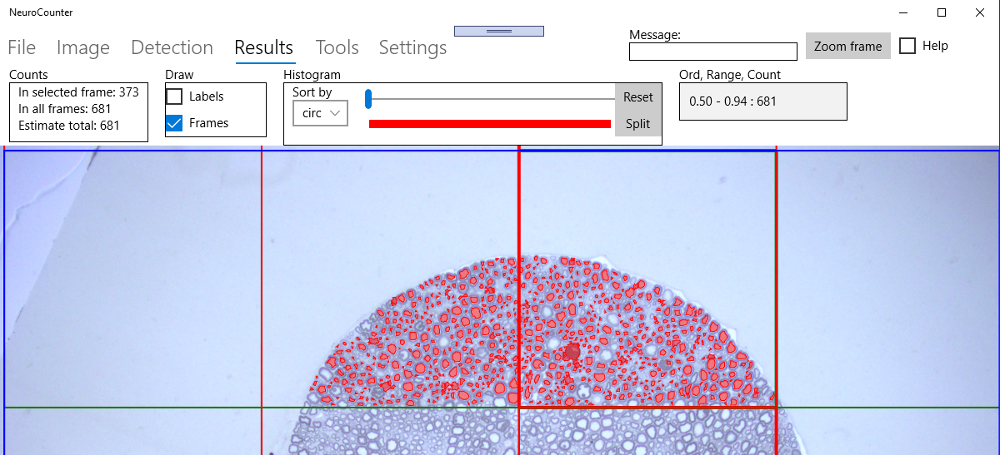
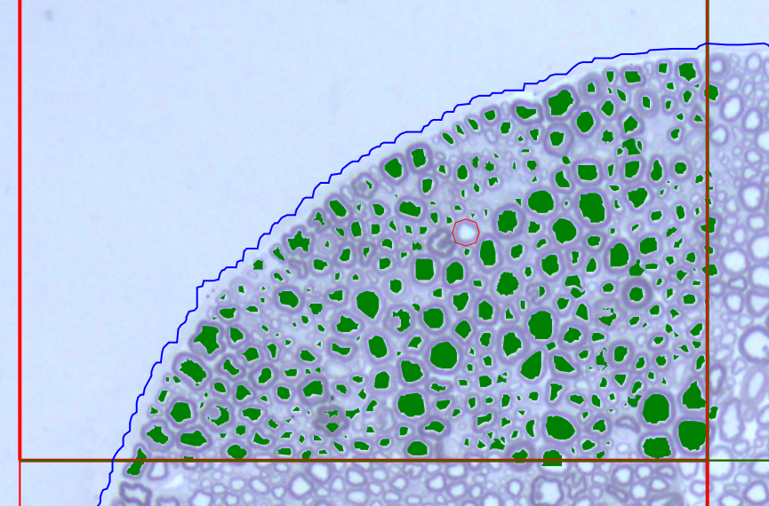
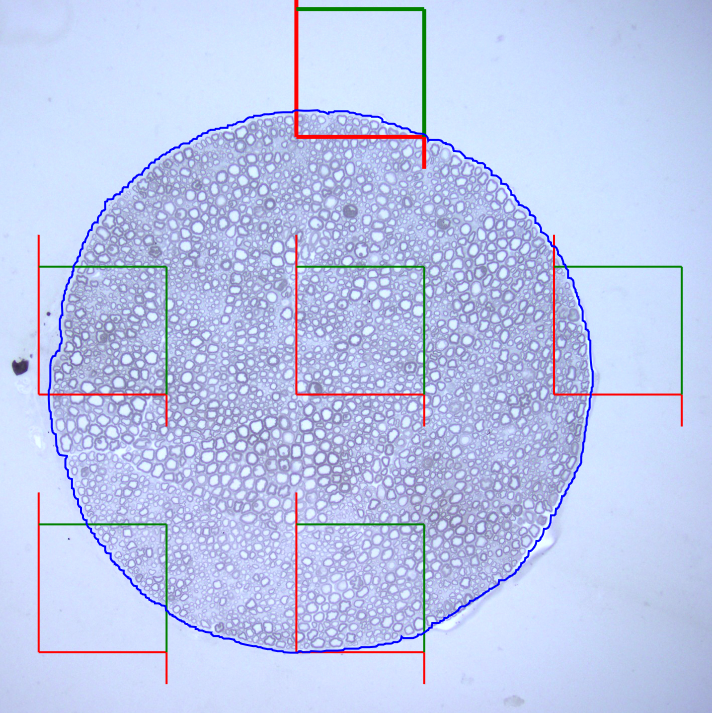
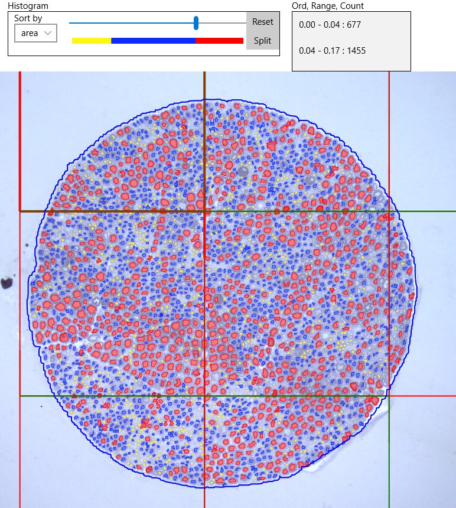

NeuroCounter
NeuroCounter is an image analysis program for semi-automated particles detection and quantification.
The user can select several detection methods with different level of interaction (Threshold,
Watershed, Fill, Polygon and Circle drawing).
Image is split into a grid of counting frames, one of them is selected as active (displayed
bold). Program detects particles inside the active frame, outlines their contours and calculates the
features like area, diameter, circularity etc. User collects results frame-by-frame sorting them by
individual parameters. Final results can be saved in a text format readable by Excel.
| License |
Free BSD-2-Clause license |
| Owner |
Institute of Experimental Physics, SAS |
| Contact |
tomori@saske.sk |
| Copyright |
(c)) Copyright 2018, IEP_SAS |
Download and installation (Windows 10 and later required)
- If you have not installed yet, download certification file of our institute ('IEP_SAS.cer') and
install it. Use options: "Local computer", Browse, then select "Trusted people".
- Install program using
this link .
Quick start
Demo 1
- In File menu, open 'Demo.jpg' sample image file).
- In Detection menu:
- Select a counting frame in first row and second column by Shift+Left mouse
button click. Keep default values of all controls unchanged and press button
Detect. Program paints detected cells green.
- Press Select all and then Lock buttons.
- Select counting frame in first row and third column and repeat the same steps.
- Switch to Results menu mode which displays the total number of counted cells in all
(two) already processed frames (Figure 1).
- Switch to File menu again and Save results in text format readable by
e.g. Excel.

Figure 1. Simple detection of cells in first row of counting frames. The Counts on the
left side displays the number of cells in selected frame and in all frames (equal to estimated
because the counting frames cover 100% of image area)
Demo 2
- In File menu, open 'Demo.jpg' sample image file). Try zoom (CTRL+mouse wheel) and
scroll (CTRL+left mouse button)
- In Image menu:
- Define Area of interest (AOI) by pressing Outline area
button and clicking points (polygon vertices) around the larger structure on the
image. If finished, close polygon by the same button and adjust its shape by the
slider under Outline area button.
- Adjusting of counting frames is possible by Distance and
Size sliders and Random button. In the default
configuration (Size=Distance) the counting frames cover 100% of AOI area.
- Calibrate system if you want to display values in real units. Use
Draw line to find the correspondence between the drawn line length
in pixels and real units in microns.
- In Detection menu:
- Select a counting frame in first row and second column by Shift+Left mouse
button click. Keep default values of all controls unchanged and press
button Detect. Program paints detected cells green.
Press Zoom frame to see details of detected contours.
- Change available sliders Threshold, Circularity and Size and watch their
influence to the detection results.
While Threshold slider is related to the Watershed detection method, the
other two sliders filter cells having circularity and size outside the given
limits.
- Select a group of cells by left mouse click or by drawing rectangle bounding
them. Selected particles (drawn orange) can be removed by Delete or
corrected by Adjust>, Inflate or Deflate
buttons. An alternative way to delete wrongly detected particles is to use right
mouse click. Check button reveals the overlapped contours and
allows their deleting
- Change Mode of operation from Watershed to Fill. Clicking
the interior of a not detected cell, algorithm detects the particle inside the
red circle (see Figure 2).
- If Watershed or Fill modes fail, switch to Polygon or
Circle and manually enter polygon vertices or circle position (its
diameter can be changed by mouse wheel).
- Press Select all and then Lock buttons.
Locked contours
can be saved ( Save or Append buttons in File
menu ) and subsequently released from memory (by Reset
button) which speeds-up program execution. Warning: Selection of another
counting frame during processing deletes all unlocked cells from the current
counting frame.
- Repeat described steps for all relevant counting frames.
- Switch to Results menu item, select sorting by Area. Use the slider to
set a value for the Split operation. Figure 3 demonstrates splitting all
cells into three categories according to their area. Reset button clears the
selection for a new settings.
- Switch to File menu again and Save results in text format
readable by e.g. Excel.


Figure 2, Left: Zoomed counting frame. Particles not found by automated Watershed method
are detected by semi-interactive Fill mode (search for the maximal gradient contour
inside red cursor) or by manual enter in Polygon or Circle mode.
Right: Counting frames where Distance = 2 X Size.

Figure 3. Sorting of cells into three categories by their area
Demo 3
- In File menu, open 'Demo.jpg' sample image file). Try zoom (CTRL+mouse wheel) and
scroll (CTRL+left mouse button)
- In Image menu:
- Define Area of interest by pressing Outline area button
and clicking points (polygon vertices) around the larger structure on the image. If
finished, close polygon by the same button and adjust its shape by the slider under
Outline area button.
- Adjusting of counting frames is possible by Distance and
Size sliders and Random button. Keep Distance
unchanged but change Size to one half (cca. 256) as shown on Figure
2 right. It means that the estimated total area is 4 x the area of counting
frames.
- Calibrate system if you want to display values in real units. Use
Draw line to find the correspondence between the drawn line length
in pixels and real units in microns.
-
In Tools menu:
- Repeatedly Run the stereological counting frames
test and watch how the estimated value converges to the generated one.
In every cycle, program generates 1000 random positions and counts these lying
inside counting frames. This value multiplied by 4 estimates the total count and
should converge to 1000 on the average.
- External program exploiting Deep Neural Network U-net architecture requires
training set consisting of annotated images. Both can be exported by
Images and Labels buttons. This feature is currently
under testing.
- You can continue with the Detect and Results menu by the same manner as in
Demo 2.